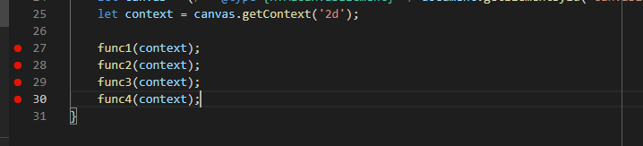

Getting Started
This section will cover how to set up the debugger for this workbook as well as future workbooks and other projects you may want to debug in the future.
Setting up
For this setup, we're going to be using Chrome but this also works with many other browsers.
First, install the debugger for Chrome. You can find it by going to the extensions tab found on the left of the VS Code window. Search up 'Debugger for Chrome' and install it.

Run the live server for your page (It should already be running for this Debugger WB).
The next step may look a little different depending on whether or not you already have debug launch configs set up for debugging.
If there are no launch configs
Click on the run/debug tab to the left. Click on Run and Debug.

If there are already launch configs
Click on the run/debug tab to the left. Go to the top and click the scrolldown.
Click on 'Add Config ([Name of Workbook])'.

The steps after should be the same
It will then ask you to select an environment, in which you will just select what
browser you use to open your page, which for this example will be Chrome (It might be Chrome (legacy)). If you didn't install
the Debugger for Chrome, Chrome will not show up as an option.

Now this launch.json file should open up and it can be found in the newly added .vscode folder
of this workbook. We need to modify the url so that the port matches the one we are using
for the live server.

We are now done with setting up the debugger for VS Code.
Note: we only have to do this once per folder. If you open up a folder that you already set up the debugger for,
the launch settings will be saved in launch.json in the .vscode folder. This effects the entire folder, you don't
have to worry about doing this for each individual file.
Running the debugger
Now try running the debugger. It can only run when the live server is open. You can run the debugger by clicking the arrow next to your launch tab.

It should open a new window with your page site. In VS Code, you should see this debugger bar at the top of VS Code. You'll also notice that the bar at the bottom turns orange.

Box (Exercise): First breakpoints
Now lets set some breakpoints. Below is a canvas with four squares.
The javascript for this can be found in 1-1.js. You will see that there are
four functions and each gets called to draw a square. To the left of the line
number for any line, you can click to add a breakpoint, or click again to remove it.
Lets add a breakpoint on each function (lines 27-30).
In the new debugger window, go to this page. It should be paused in the debugger bar in VS Code. If you were already on this page, refresh it so that the breakpoints activate. If you set the breakpoints correctly, you will see that the canvas is empty. You can click on 'continue' in the debugger bar to go to the next breakpoint. You will notice that each square will appear as you continue as the code is paused at each breakpoint.
One more thing of note, make sure you continue all the way or remove/disable all breakpoints and refresh when you want to leave the page while debugging. You won't be able to leave the page until you do. Of course, if you are done debugging, you can simply end the debugging session anytime by closing out the window.
At the bottom of the debug section, there is a BREAKPOINTS tab. If you hover over the tab, you will see 3 actions you can do, the one on the far right will allow you to instantly remove all breakpoints.

When do breakpoints activate?
Breakpoints pause the program when the line of the breakpoint is reached. So if you have already reached the end of the program and then you add a breakpoint, it won't do anything since you already went past the breakpoint, you would have to refresh the page to reach it again.
A breakpoint can still activate if you add it after starting your program without having to refresh. This would occur in things like mouse events or animation loops where functions may get called again after time has passed, and if you placed a breakpoint in those repeated functions before it gets called, it will pause when it does. We can see this later in section 4's exercise.
Too many windows?
Right now, it seems like it takes 3 windows to debug: VS Code, the live server window, and the debugger window. If this is too hard to cram on the screen, we can close out/ignore/minimize the live server window. The live server is running, we can run the debugger irregardless of if the window is already open regularly. You could instead do everything in the debugger window.
Summary
This was essentally how we setup the VS Code debugger to run. While just being able to pause a program on a line may seem powerful on its own, there is much more that can be done. Next we will look at stepping through our code.
Next: Stepping